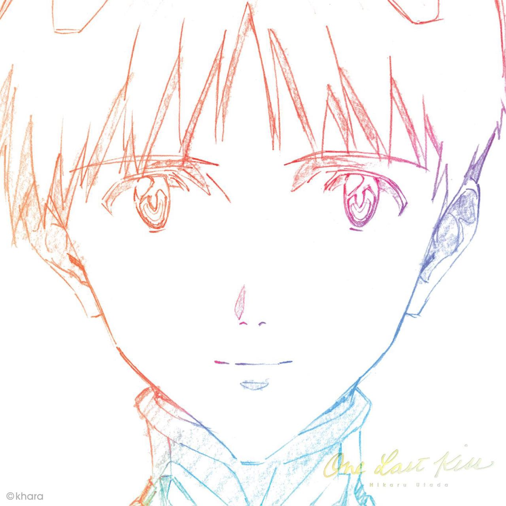
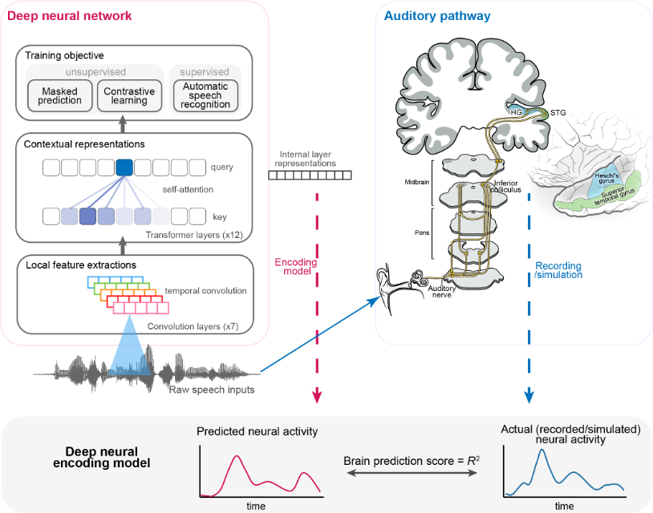

Linkai Peng
Beijing, China
Email: penglinkai96@gmail.com | penglinkai@corp.netease.com
About Me
Hi, this is Linkai Peng. I am an ML engineer @ NetEase YouDao, where a central focus of my work is developing machine learning models and applying linguistic knowledge to improve Language Learning system for Chinese English Learner. Recently, I am developing a Conversational AI teacher for language learning. I am curious about the process of human/machine speech perception . My research interests intersect in the areas of speech processing, phonetics, second language acquisition, neuroscience, and cognitive science.
- Non-native Speech Processing: Mispronunciation detection and diagnosis with self supervised model. (Linkai et al'2021;2022)
- Mandarin Tone Recognition: modeling tone with multi-scale temporal-frequency features. (Linkai et al'2020;)

Image from: Li, Y., Anumanchipalli, G., Mohamed, A., Chen, P., Carney, L. H., Lu, J., Wu, J., Chang, E.F. (2023) Dissecting neural computations of the human auditory pathway using deep neural networks for speech. Nature Neuroscience, 26, 1-30.
-
Updates
- [11/2023] The setup of two research project pages has been completed [Project #1'2023 / 中文 | Project #2'2023]. If you have similar research interests and relevant background (computer science, cognitive science, and linguistics), please feel free to take a look at them and any suggestions are greatly appreciated.
- [08/2023] New preprint [ArXiv | Website], Spoken Language Intelligence of Large Language Models for Language Learning, We conducted preliminary explorations on large language models and confirmed through various prompts that text-based large language models (LLM, e.g. ChatGPT, GPT4, LLaMa2) have a good understanding of concepts in phonetics, phonology, and second language acquisition.
We look forward to LLM with speech input in their performance in neurolinguistics!
Research Experience
- NetEase, Beijing, China, July 2022 - Now
YouDao Group
- Artificial Intelligence Engineer
- ByteDance AI-Lab, Beijing, China, November. 2020 - February. 2021
- Research Intern
- Beijing Language and Culture University, Beijing, China, September. 2019 - June. 2022
Speech Acquisition and Intelligent Technology Lab
- Research Assistant
Last update: 11/2023. Modified from Website of Prof. Hanjie Chen